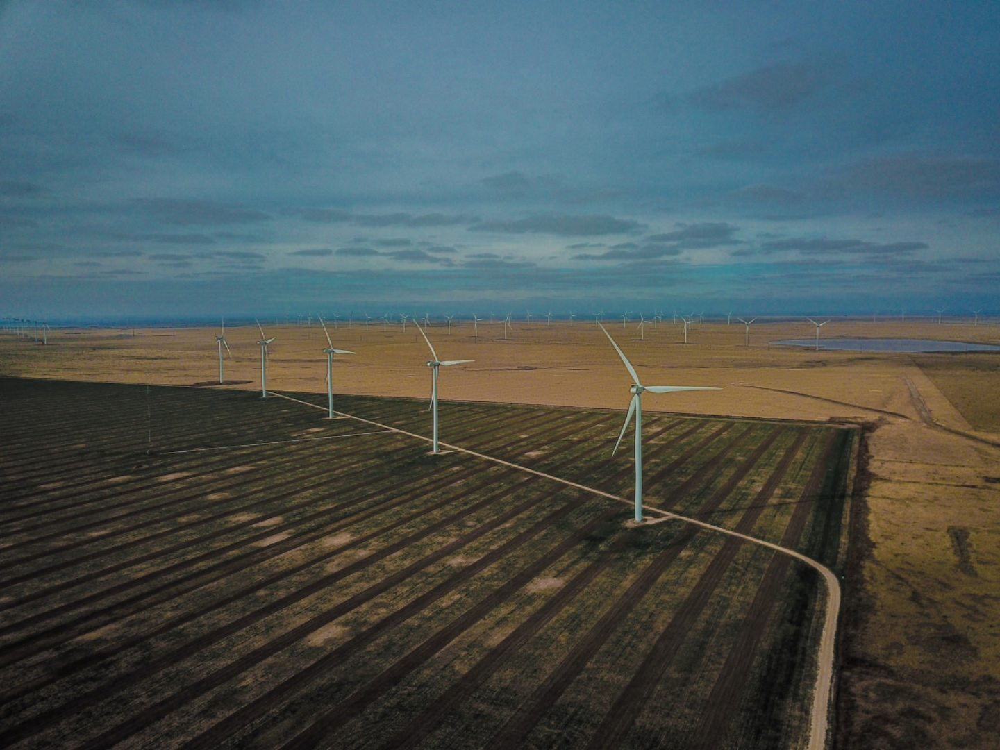
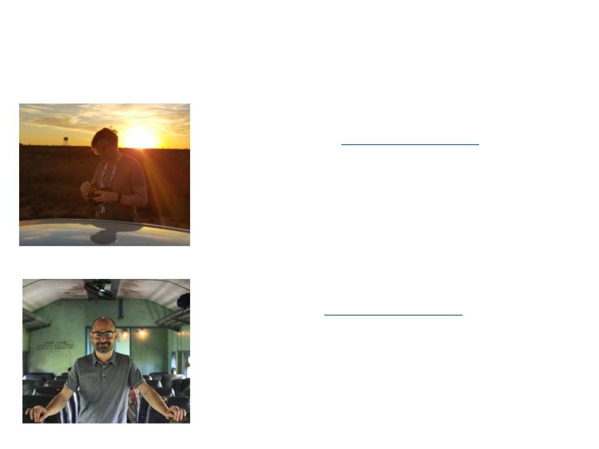
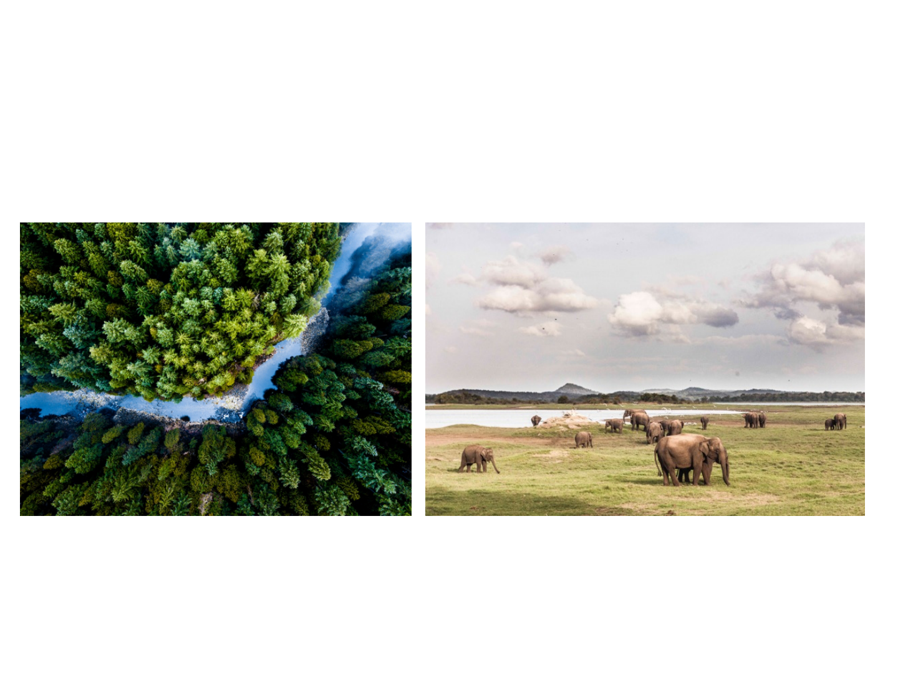
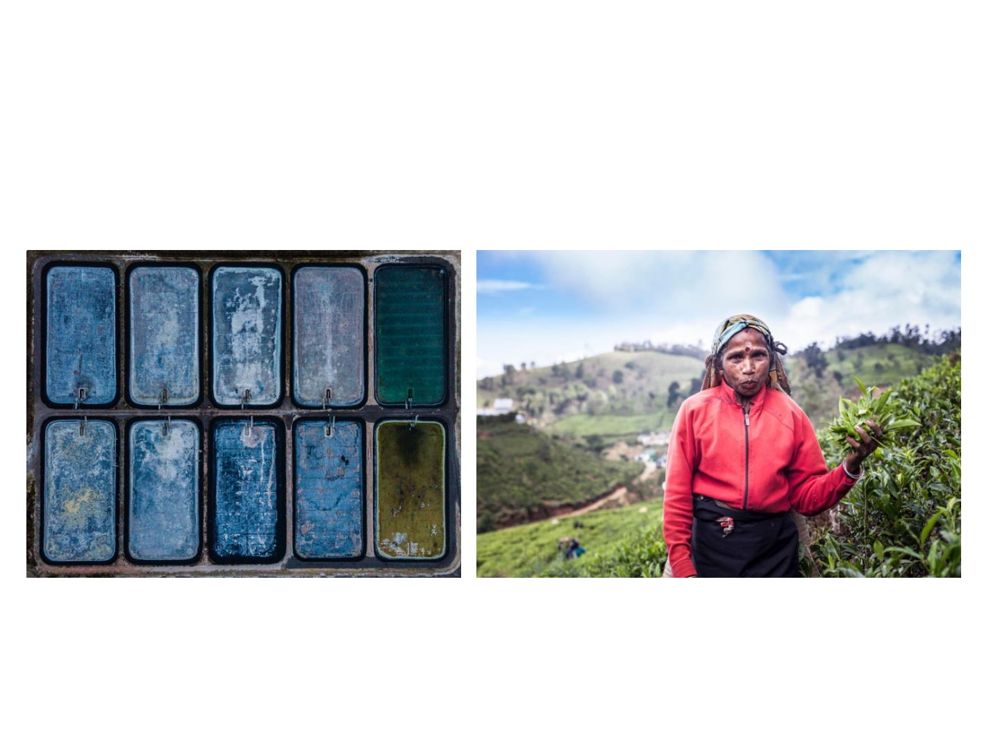
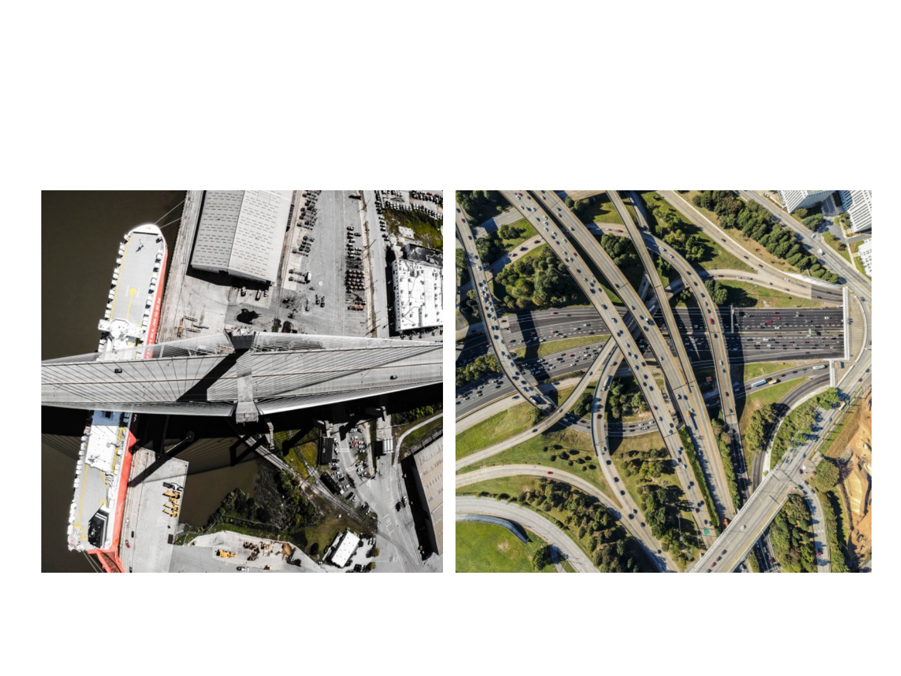
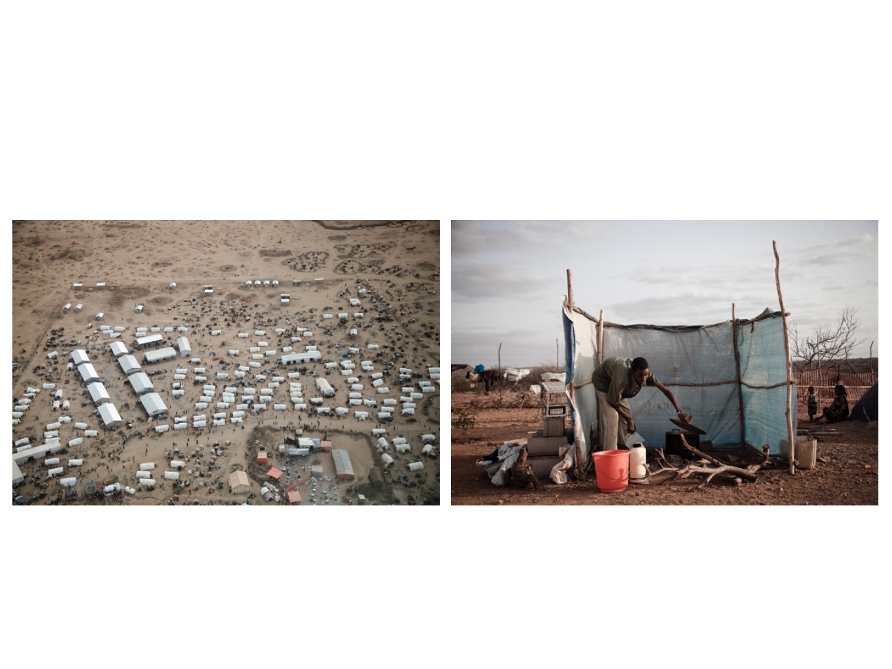
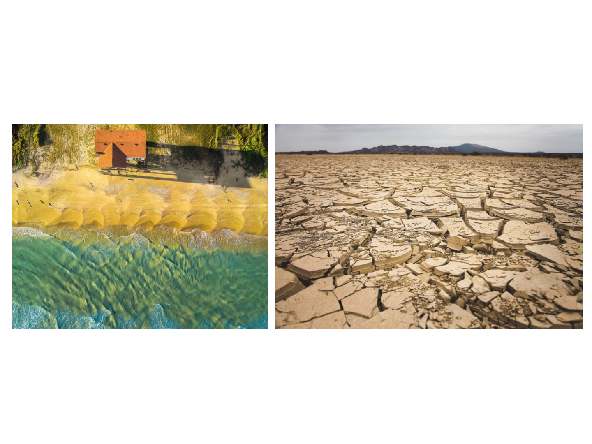
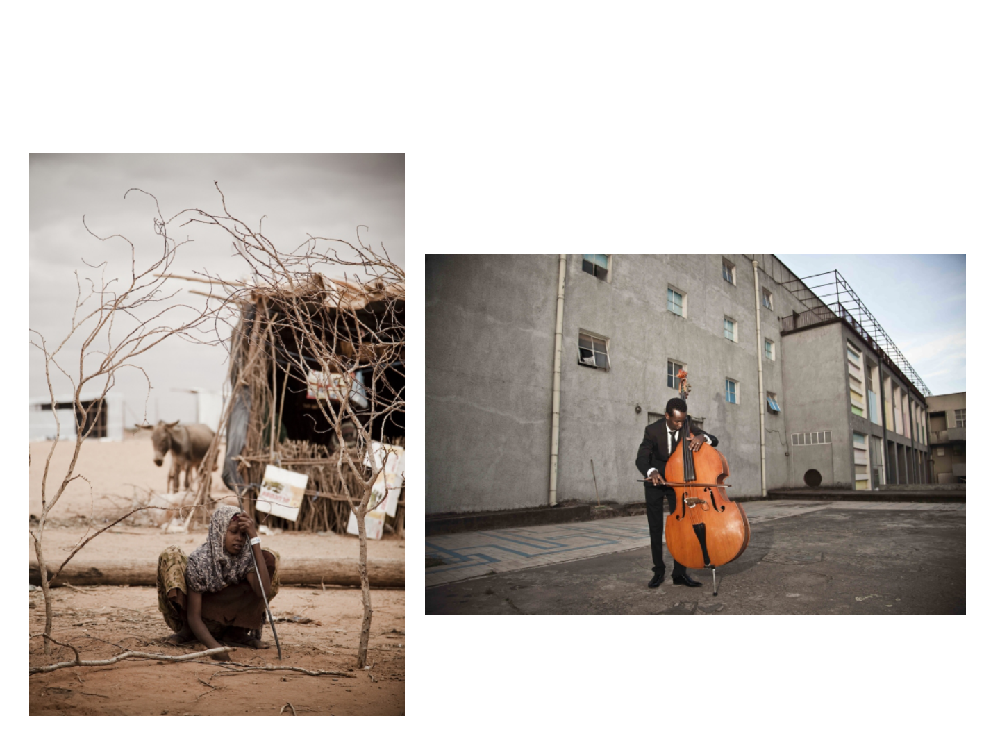

Development
Development
,
,
from Above & Beyond
from Above & Beyond
___
___
a photography project by
Borja Santos & Simon Black

Description
Our world is changing, for better and for worse.
Your organization wants to make it better,
but this can be hard to communicate.
Photography is a powerful tool,
connecting with people like no other medium.
We are two development practitioners
and recent Harvard graduates.
We use drones and cameras to connect you to
your audience in visual and visceral way.
Your development story is important.
We want to help you tell it.

Who we are
Simon Black is from the UK and is currently based in New York. He
loves travelling and taking photos from the air, land, and sea to show
how our world is changing. His work can be seen here.
Simon recently graduated with an MPA in International Development
(MPA/ID) from Harvard. He currently works for the World Bank,
helping developing countries mitigate to climate change
through economic reform. He has also worked as a macroeconomist
for the British government, a financial consultant to banks in London,
and as a microfinance consultant in Bangladesh and the Philippines.
Borja Santos is from Spain and has ten years of development
experience. He also works as a photojournalist, telling stories about
important social issues. His work can be seen here.
Borja also recently graduated with an MPA/ID from Harvard. He is
currently a consultant and adjunct professor of international
development at IE University. He is a public policy practitioner having
worked in evaluation for the World Bank in Perú, in economic growth
for Harvard’s CID in Sri Lanka, in resilience and humanitarian action
with the United Nations in Ethiopia and Ecuador, and in project
management for the Spanish Ministry of Foreign Affairs.

Environment

Agriculture

Infrastructure

Humanitarian

Climate change

Personal stories
core deliverables:
50+ photographs with captions,
in agreed formats for use on websites, social media, brochures
and other promotional materials
a compiled photobook, or a short article
telling the story in English and Spanish
additional services:
comprehensive article, focused for major media outlets,
shorter blog posts, short video
Outputs